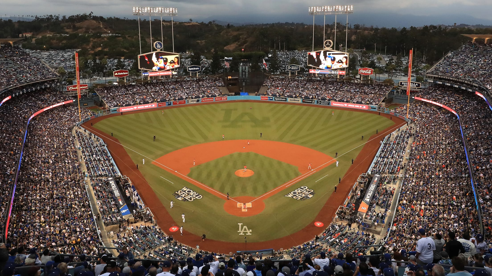
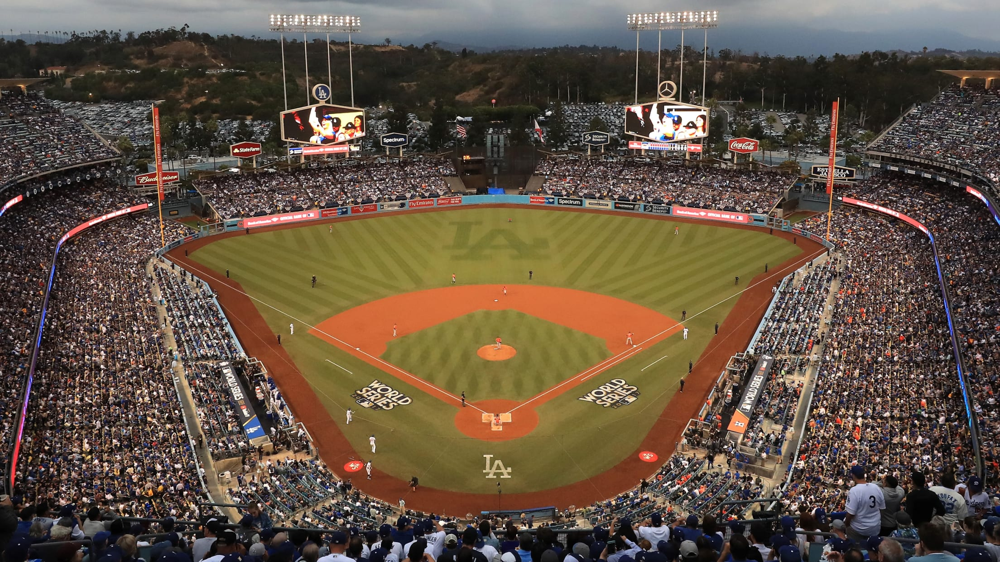

The Driving Forces of Pro Baseball Attendance
Major League Baseball has its organizations that sell out every night and those that continually struggle. As do the minor leagues. What forces drive these differences?
Posted on 05/01/2023, at 10:51 p.m.
 

You enter the gates at the Oakland Coliseum to watch an Oakland A’s game. For the most part, all you see is empty seats. You gaze upon a number of signs calling out John Fisher, the Oakland owner, for uprooting the team following this season to Las Vegas. Eighteen players take the field in front of an average of less than 10,000 fans and over 50,000 open seats night-in and night-out throughout the course of a 162 game MLB season. Take a trip right down the coast of California, though, and you will find Dodger Stadium bustling with energy and anticipation. Thousands of cars are stopped in bumper-to-bumper traffic just to get into the game. On a single game basis, 40,000 more people are attending Dodger games than A’s games.
So what causes such a disparity between organizations in the MLB? The first thought that pops into most people’s brains is money. Cheaper tickets would explain a higher demand and attendance to see games. It’s actually the opposite that takes place, however. Demand to see games influences the ticket prices more than vice versa. Dodger Stadium not only has the highest average attendance per game but also the highest average ticket price compared to any other organization and stadium.
In the case of ticket prices, it’s the demand for tickets that drives the price of the admission. If it isn’t the ticket prices that dictate attendance, it must be the team’s success. In Major League Baseball, winning and contending for titles and playoff appearances dictates a large portion of attendance on a nightly basis. Minor league baseball broadcaster Johnny Gadamowitz is quick to point out at the major league level that a squad’s attendance will almost always be boosted by the quality of the on-field product. Although there are certain fan bases that will always outperform others for average attendance like the Boston Red Sox, New York Yankees and Chicago Cubs, even these teams’ attendances will show the signs of a struggling or successful ball club through the ticket sales.
While there are always going to be a number of factors that contribute towards a certain sized crowd for an MLB game, it is clear that the team’s success can help dictate the turnout at the ballpark. As you move down levels of professional baseball though, attendance becomes less and less linked to victory on the field. Gadamowitz said, “Not many people come to these minor league contests to follow the ins and outs of the team and game. Most people are here for some sort of entertainment value coinciding with a ball game.” That value often times comes from the many different promotions offered at most minor league contests. Whether its cheap beer and hot dogs or the opportunity for kids to run the bases after a game, minor league teams strive to consistently bring a different group of viewers in for each home contest.
Even though MLB teams are in a far better spot regarding ticket sales than the entire minor league system, entertainment value does raise an interesting concern for the sport of baseball. Attendance and viewership has been dropping at all levels of “America’s pastime.” Baseball fans used to go to minor league games just for the thrill of seeing a game or watching specific rising talents. Now, Gadamowitz says these fans have drifted on to different sports and are much harder to find for organizations.
One interesting team development recently has been the Savannah Bananas. Compared to the Harlem Globetrotters of basketball, the Bananas play their version of baseball dubbed “BananaBall.” The version has plenty of rules that go against a typical baseball game and against all forms of traditionalism revolving around the game. It brings a higher intensity and energy to the game with plenty of dancing, music, and acting. The success has been remarkable for the Bananas. Savannah sells out nearly every game they play in and are currently touring around the United States.
The entire professional baseball system is fighting back against these concerning trends sending fans away from classic baseball. Recently, a pitch clock was implemented throughout the minor leagues and in Major League Baseball. The new guidelines have sped the game up a considerable amount. The question Gadamowitz says is can baseball ever get back to the point where it was at because football and basketball specifically seem to have far surpassed baseball in terms of audience draw and social media attention. In the end, it's not just the attendance that matters either. Viewers at home and media interaction are all things that are important for baseball to continue growing instead of heading in the wrong direction.